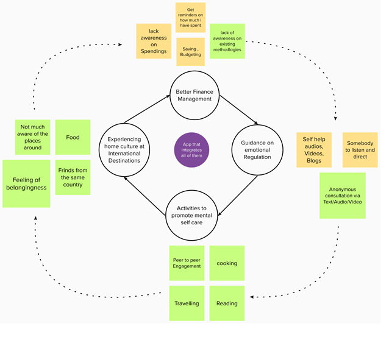
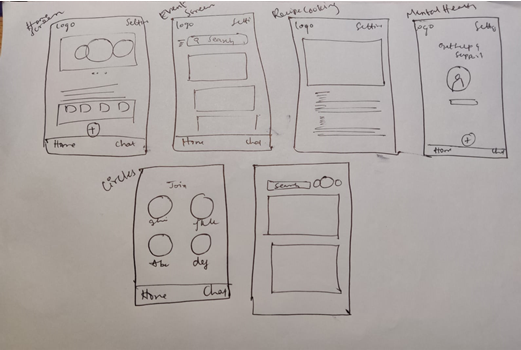
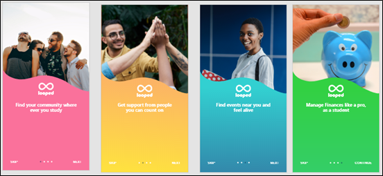
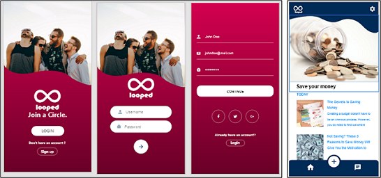
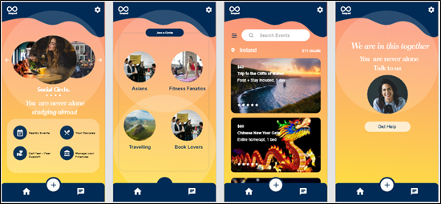

PROJECT SCOPE:
- My Role: Design Thinking, User Research, Information Architecture, Rapid Prototyping, Usability Testing, Application Development
- Tools: Adobe XD
- Timeline: March 2020 - May 2020
- Deliverables: Design Protoype, Research Findings, Sketches, User Testing and Outcomes.
The Problem
International students in the year 2020-2021 in Ireland have been significantly affected by the COVID-19 pandemic. This is in furtherance to a series of stressors, which are typically experienced when moving to a new location. Moving into a new place is coupled with a series of challenges such as, finding a suitable accommodation, performing errands, becoming culturally familiar with the locals, managing studies along with working part time to achieve financial stability, language barriers, etc. It is found that owing to the advent of the pandemic, higher levels of stress were significantly associated with the students of international status. Therefore, it is important for students to consider the conscious management of their emotions through mental self-care and technology can be an enabler here.
The Solution
In order to address the complexities and dynamics of the current situation facing international students, presenting ‘Looped’, a mobile application which provides users an opportunity to be a part of an online social community and feel a sense of belonging while studying abroad. Its features are outlined:
- Students can join virtual groups or ‘circles’ where they can engage and converse with people based on commonalities of interests
- Students can seek peer support from like-minded others to cope with their emotions.
- The app also aggregates information on local events and activities of regional relevance to international students and also provides food recipes
- It provides tips on managing finances for students.
Therefore, ‘Looped’ is a bundle of multiple benefits, that when provided as an amalgamation can empower international students to maximise positive emotions and enhance their mental self-care.
User Research
A number of research methodologies were used to uncover the challenges faced by students, which could be solved with the help of a design intervention.
Netnography Findings
Netnography was conducted to identify certain patterns among international students that may indicate the activities they indulge in for mental self-care. The netnography study was carried out non-intrusively by researching Instagram accounts of international students that showcased publicly accessible content and pictures. It is evident from the below exhibits that students often indulge in cooking, exercise, travelling, et al as ways to uplift their mental well-being and it is their way of practising mental self-care.
Findings from Design Probes
In order to penetrate deeper into the psychology and behavioural practices of our respondents, the listed design probes were selected to uncover further insights..
- Participants are asked to relive memories from the past and share pictures of activities they love doing
- Participants will be asked to associate experiences, things and people with words provided to them
- Participants are asked to brainstorm solutions to achieve mental peace in a counterintuitive manner
- Participants are asked to take pictures of elements from life that affect their mental health
- Participants are asked to sketch out places they have visited in the past that affect their mental health

.png)
Research Findings
The key themes emerging from the above analysis are explained as follows:
- Reliance on external factors for happiness
- Desire to regulate emotions
- Engagement with activities to experience happiness
- Use of artefacts to manage emotions
- Engagements with the home culture at the foreign destination
The Opportunity
Design Goals
Experience Stability
International students would like to experience stability in various facets of life such as finances, government restrictions on travel and so on.
Guidance on emotional regulation
From the design probes, it was unveiled that users are personally interested in regulating their emotions.
Engage in activities that promote self-care
Users engage in various recreational activities in order to enhance their level of self-care.
Experience home-culture at the international destination of study
Users appreciate when elements of their home culture are found at the international destination of their study.

Sketching and Wireframing
Early ideas were sketched out repeatedly with pen and paper in order to form a general idea of the possible screens and user flows. The lightning-fast nature of these paper sketches was great for getting ideas out quickly.

Prototyping, Testing & Iterating
Prototypes were developed from low fidelity to high fidelity, in furtherance to the research and design probes, to reflect the various features of the mobile application that fulfil the design goals. The prototypes were subjected to iterative testing to progress to a high fidelity version.


